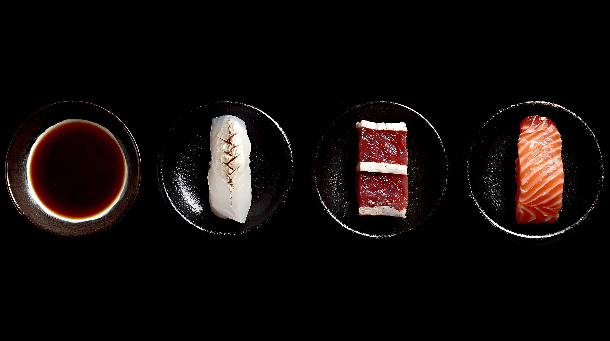
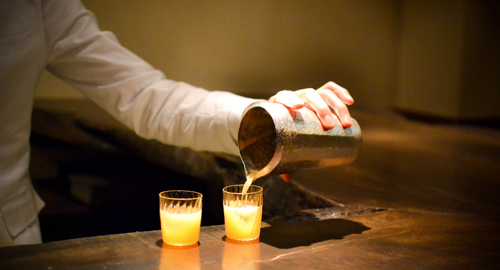

Menu
Appetizers
-
Hokkaido Scallop
Hand-harvested from the cold waters of Hokkaido, lightly dressed to highlight its natural sweetness and silky texture
$42.00
-
Otoro Tartare
Finely hand-chopped bluefin otoro topped with premium caviar, rich and delicately seasoned
$95.00
-
Aged Hamachi
Dry-aged yellowtail with enhanced depth, finished with white soy and bright citrus
$48.00
-
Uni Chawanmushi
Savory dashi custard crowned with creamy sea urchin and subtle truffle essence
$68.00
-
Kombu-Cured Snapper
Snapper cured in kombu to concentrate umami, finished with herbal aromatics
$45.00
-
Abalone Sashimi
Tender, thinly sliced live abalone served with umami-rich broth and seasonal accents
$88.00
Nigiri Sets
-
Hajime
Akami, Aji, Hamachi, Tamago, Salmon
$125.00
-
Kuro
Akami, Chu-Toro, Otoro, Negi-Toro, Salmon
$140.00
-
Umi
Kinmedai, Aji, Japanese Snapper, Shima Aji, Otoro, Ikura
$155.00
-
En
Kuruma Ebi, Seared Salmon Belly, Salmon, Binchotan Tuna, Uni, Ikura, Tamago
$165.00
-
Tsuki
Hokkaido Uni, Otoro, Soy-Marinated Ikura, Ikura, Tamago, Ika, Tuna, Eel, Albacore
$175.00
-
Nami Signature
Otoro, Kinmedai, Hokkaido Uni, Kuruma Ebi, Bluefin Tuna, Truffle Salmon Belly, A5 Wagyu with Caviar, Geoduck, Eel
$200.00
Dessert

-
Tamago
Castella-style Japanese omelet with gentle sweetness and soft texture
$24.00
-
Black Sesame
Black sesame ice cream finished with roasted kinako
$32.00
-
Strawberry Matcha Mousse
Ceremonial-grade matcha mousse balanced with strawberry and white chocolate
$36.00
-
Seasonal Fruit
Curated seasonal fruit with light citrus dressing
$28.00
-
Hojicha Crème Brûlée
Roasted green tea custard with caramelized sugar crust
$42.00
-
Yuzu Sorbet
Bright, palate-cleansing sorbet highlighting fresh Japanese citrus
$26.00
Drinks
-
Junmai Daiginjo
Polished, floral sake with a clean, refined finish
$45.00
-
Dassai 45
Premium sake known for balance, elegance, and smooth texture
$42.00
-
Seasonal Nigori
Chef-selected unfiltered sake, creamy and lightly sweet
$38.00
-
Japanese Umeshu
Traditional plum liqueur with layered sweetness and acidity
$36.00
-
Sparkling Sake
Crisp and effervescent with champagne-like character
$40.00
-
Yuzu Highball
Japanese whisky and soda with fresh yuzu aromatics
$34.00